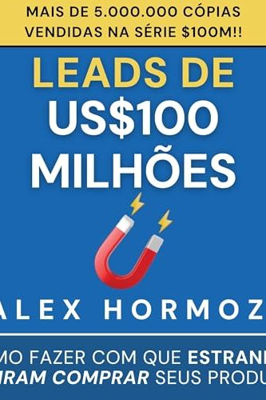

Library › Business & Startups
$100M Leads — Summary & Key Lessons

How to get strangers to want to buy your stuff — the four ways to let the world know you exist.
📖 OPEN THE FULL INTERACTIVE BREAKDOWN →🌐 Read it in Hindi, Hinglish, Gujarati, Tamil & 22 more languages — free, with audio.
💡 The Big Idea
Businesses don't starve from bad products; they starve because not enough people KNOW about the product. Hormozi's engine has two parts. First, LEAD MAGNETS: give away something genuinely valuable free — solve a narrow problem completely — because 'the goodwill from a great free thing converts better than any pitch' (give away the secrets, sell the implementation). Second, the CORE FOUR — the only four ways any business gets leads: (1) Warm outreach (1-to-1 to people who know you), (2) Content (1-to-many to people who know you), (3) Cold outreach (1-to-1 to strangers), (4) Paid ads (1-to-many to strangers). Everyone should max ONE before adding the next — 'better to do one channel excellently than four averagely.' Wrapped around it: the Rule of 100 (100 primary actions a day — 100 minutes of content, 100 cold messages, or $100 in ads — every day, for 100 days, before judging), and the four lead-getters that scale beyond you: customers who refer, employees, agencies, and affiliates. Advertising isn't a talent; it's a volume-and-iteration game most people quit at rep 20 of 10,000.
🧠 The 6 Key Lessons
Lesson 1: Lead Magnets: Give Away the Good Stuff
Section II: Get Understanding — Lead Magnets
A lead magnet is a complete solution to a NARROW problem, given free, that reveals a bigger problem your paid offer solves. Anatomy of a great one: it targets a problem the customer KNOWS they have (not one you must convince them of), solves it fully (a half-useful freebie brands you as half-useful), is consumable fast (checklist > course), and naturally opens the next door (the free website audit reveals the redesign need; the free meal plan reveals the coaching need). Three types: reveal-their-problem tools (audits, quizzes, calculators — 'your website scores 34/100'), samples/trials of the real thing, and one-step-of-many resources (the first workout, the template). Hormozi's counterintuitive rule: your free thing should be BETTER than competitors' paid thing. That feels insane until you see the math — goodwill compounds, and the person whose free advice made someone money doesn't have to sell the paid tier; they get asked for it.
📖 Example: Hormozi's gym-launch era: instead of ads saying 'join my gym,' he ran '6-week free challenge' campaigns — a complete transformation program, genuinely free. Skeptics called it giving away the store. Results: the challenges filled instantly (a real free thing… Read the full example →
⚡ Do this: Build one lead magnet this week: pick the narrowest painful problem your audience knows they have, solve it completely in a checklist/template/tool, and give it away with zero gate except a name. Make it embarrassingly better than it needs to be.
Lesson 2: The Core Four: There Are Only Four Ways
Section III: Get Leads — The Core Four
Every lead in history came through one of four doors, defined by two questions: do they know you (warm/cold) and are you reaching one or many (private/public)? WARM OUTREACH: message your existing network 1-by-1 — the most underused channel on earth; Hormozi's script is give-first ('noticed you're doing X, made you this') and ask for referrals, not sales. CONTENT: public value to people who follow you — hook, retain, reward; give until they ask. COLD OUTREACH: strangers, 1-by-1 — a numbers-and-personalization game (100/day, first line customized, offer so good it's awkward to ignore). PAID ADS: strangers at scale — rent attention, feed it your lead magnet, expect to LOSE money on the front end and win on lifetime value. The discipline: pick the ONE channel that fits your current stage (no audience + no money = warm outreach; no audience + money = ads/cold; audience = content) and hit MAXIMUM volume on it before even thinking about channel two. Channel-hopping at 20% effort in each is the most popular form of business procrastination.
📖 Example: The book's own launch is the demo: Hormozi spent years giving away free content (channel 2) at absurd volume and quality — full frameworks, real numbers, zero gate — building an audience that then moved MILLIONS of dollars of books and course-adjacent offers… Read the full example →
⚡ Do this: Diagnose your stage honestly and pick ONE channel: warm (list 100 contacts today), content (100 min/day creating), cold (100 messages/day), or ads ($100/day testing). Commit to Rule-of-100 on that single channel for 100 days — calendar it before your brain negotiates.
Lesson 3: The Rule of 100: Volume Beats Genius
Section III: Advertising Math
The Rule of 100: do 100 primary actions per day, every day, for 100 days — 100 warm/cold messages, 100 minutes of content creation, or $100/day in ad spend. That's 10,000 reps before you're allowed a verdict. Why so brutal? Because advertising outcomes are lumpy and skill compounds invisibly: your first 50 posts teach you what a hook is, the next 200 teach you what YOUR audience's hook is, and somewhere in the thousands one piece does more than the first thousand combined — but only for the person still publishing. Most people run 20 reps, whisper 'this doesn't work for my niche,' and switch channels — resetting the learning curve to zero, forever, in rotation. Hormozi pairs it with 'more, better, new' in that order: first MORE volume, then make the winners BETTER, and only try NEW channels/formats when more+better plateau. The uncomfortable summary: you don't have a strategy problem; you have a reps problem with a strategy excuse.
📖 Example: Hormozi's own content arc, by the numbers he shares publicly: years of near-daily output across platforms with modest traction — then compounding kicked in and single clips began outperforming entire previous years. He points at every 'overnight' creator's… Read the full example →
⚡ Do this: Define your primary action for your chosen channel and do 100 today. Track only two numbers for 100 days: reps done and responses/results per week. Review weekly, change tactics freely — but the 100/day is non-negotiable until day 100.
Lesson 4: Lead Getters: Make Other People Bring You Leads
Section IV: Get Lead Getters
The ceiling on the Core Four is YOUR hours — the unlock is the four lead-getters, people who advertise FOR you. (1) CUSTOMERS → referrals: engineered, not hoped for — ask at the moment of peak happiness (right after a win), give them something to give (a free month for both sides), and make your product so share-worthy that telling friends makes THEM look good. (2) EMPLOYEES: every team member running the playbooks multiplies volume without multiplying you. (3) AGENCIES: rent expertise, but Hormozi's twist — hire them to LEARN the channel (insist on transparency, ride along, take it in-house once you speak the language). (4) AFFILIATES/PARTNERS: people with YOUR audience but a different product — give them a whole offer to sell (their branding, your fulfillment) and a fat cut; their trust transfers to you in one email. The strategic order most miss: referrals first (free, instant, compounding), because a leaky-bucket business pouring leads into bad retention is just paying to disappoint people faster.
📖 Example: Dropbox's legendary referral engine — give 500MB, get 500MB — took them from 100k to 4M users in 15 months with near-zero ad spend: the product's free space WAS the currency, and both sides won, so sharing felt like a gift, not a pitch. Hormozi's gym… Read the full example →
⚡ Do this: Install one referral loop this month: define the moment of peak customer happiness, script the ask for that exact moment, and make the incentive two-sided and generous enough to feel like a gift. Track referrals as a first-class metric next to leads.
Lesson 5: The Lead Generation Machine: Your Website Is a 24/7 Salesperson
Part 3: The Core Four
Hormozi's core insight about owned channels: your website (and content) should be engineered to convert visitors into leads continuously — a salesperson who never sleeps and never complains. The mechanics: every page should have one job — capture a name and email in exchange for something valuable. The most powerful tools are lead magnets (free value: checklists, calculators, guides) and the content that drives traffic to them. Most small businesses have a 'brochure website' that tells people about the company and asks them to call — a dead end for lead generation. The fix is a conversion architecture: value first, capture second, follow up third. Your website isn't a brochure; it's a machine.
📖 Example: Hormozi shows how simple additions — a free checklist on every relevant page, a lead magnet replacing the 'contact us' form — turned his clients' dead websites into lead machines that produced prospects while the owner slept. The value given away was the… Read the full example →
⚡ Do this: Audit your website (or social profile) today: what do visitors get in exchange for their contact? If nothing, create one lead magnet this month.
Lesson 6: The Offer Is the Engine: Lead Generation Starts With Something Worth Wanting
Part 2: The Offer
Hormozi's contrarian point: most people struggle with lead generation because their offer is weak — they're trying to attract leads to something people don't really want. Before any traffic strategy, fix the offer: make it so compelling that giving an email feels like a bargain. His framework: the offer should promise a specific transformation, delivered with speed, and backed by a guarantee that removes the risk. A great offer makes lead generation easy (people self-select); a mediocre offer makes every marketing channel expensive. The sequence matters: offer first, traffic second, conversion third. Fixing the offer is often a 10x lever disguised as a marketing problem.
📖 Example: Hormozi describes clients who doubled and tripled conversion simply by adding a guarantee and a clearer promise to an unchanged product — the same traffic, the same pages, dramatically more leads, because the offer finally gave people a reason to act. Read the full example →
⚡ Do this: Write your current offer in one sentence. Ask: 'Is the transformation specific? Is the risk removed?' Improve one of the two this week.
✅ 5-Step Action Plan
- Ship one genuinely great free lead magnet: complete solution, narrow problem, zero friction.
- Pick ONE Core Four channel for your stage and refuse to channel-hop.
- Run the Rule of 100 for 100 days — 10,000 reps before any verdict.
- Sequence: more volume → better winners → only then new channels.
- Engineer referrals at the peak-happiness moment with two-sided rewards.
💬 Best Quotes from $100M Leads
- “You don't get paid for what you know. You get paid for what you do with what you know.”
- “Give away the secrets, sell the implementation.”
- “The person who does the most reps wins — advertising is a volume game wearing a creativity costume.”
Interactive version: mark lessons as read, listen in your language, share quote cards.